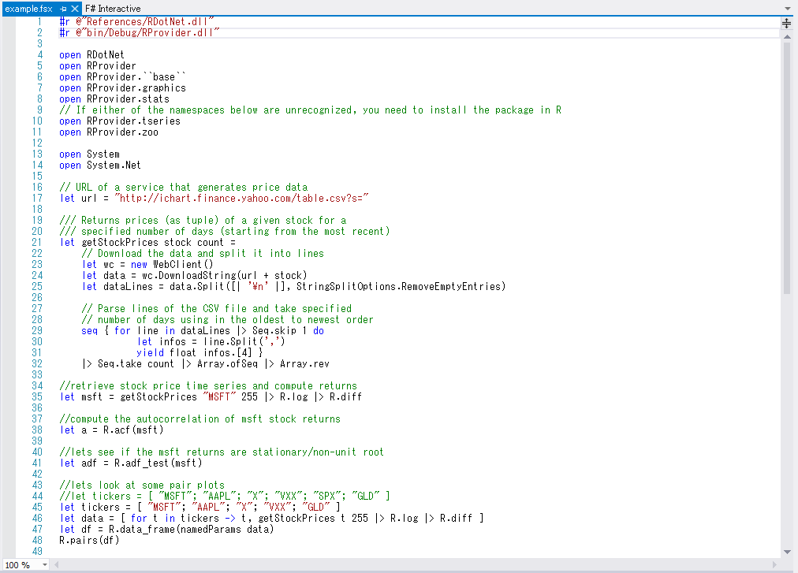

この記事はF# Advent Calendar 2012 の3日目の記事です.
(勢いで参加申し込みしてしまいましたが, 1日目, 2日目の記事を見て若干後悔しています... 普段 blog とかやってないので, こんな感じの体裁, 内容になってしまってますが, お許しください.)
内容は, 表題のとおり, F# + Excel-DNA + R.NET を使った環境構築についてです. 似たような内容については以下のサイトなどですでに取り扱われています.
(プログラミングが専門ではないので, 素人の印象ですが...)
今回の内容は windows xp (32bit) で試してます.
R のインストール時のオプションでは「バージョン番号をレジストリに保存する」を選んでいます.また, R のインストール後, "c:/Program Files/R/R-2.15.2/bin/i386/Rlapack.dll" を "c:/Program Files/R/R-2.15.2/library/stats/libs/i386/" 以下にコピーしています. 環境によってはこれをやらないと R.NET からうまく R を扱えないようです. (最新版の R.NET を使用すると回避できる場合もあるという 話 ですが, 完全ではないようです.)
Excel-DNA では, 普通のテキストファイル(dna ファイル)にプログラムを書くことができますが, それだと intellisense が使えないので, ここでは dna ファイルから Visual Studio で作成した dll を呼び出すことにします(詳しい設定は下記参照).
したがって, Visual Studio については通常どおりメニューから [ファイル]-[新規作成]-[プロジェクト]-[F# Library] を選びます. また, プロジェクトの名前は sample にします.
本体の Excel ファイルや Excel-DNA 関連のファイルを準備します. Visual Studio の Build Events を設定すればいろいろ自動的にできそうですが, ここでは単純に dll が作成される "... bin/Debug/" 以下にファイルを準備することにします.
"... /bin/Debug/" 以下に準備(コピー)するファイル
Visual Studio で作成される dll の名前に応じて Path のところを適当に変えてください. また, 設定項目については こちら を参照してください.
R.NET.dll と ExcelDna.Integration.dll に参照設定します.
いよいよプログラムを作成します (適当に勘でやっているので, 不備があったら教えていただけると助かります).
今回は正規分布とt分布に従う乱数を返す関数と, 正規性の検定として Shapiro-Wilk 検定を行う関数を実装してみます. (といっても R の関数を呼ぶだけですが...)
最初のコメントにあるように R のインストールディレクトリを直接指定した方が簡単ですが, R のバージョンアップのときのことを考えて, レジストリを見に行くようにしています (R のインストール時にレジストリに登録してないと動きません). また, rengine は mutable にしないといけないようです.
また, R からの戻り値(AsNumeric()の結果)は Seq になるようなので, 配列に変換しています.
プログラムを作成したら, 構成を Debug にしてコンパイルします.
参考までに上で作成した関数の使用例を示します.
まずは R_rnorm の使い方:
F# から配列を返す時には, Excel 上では配列数式を使って結果を受け取ります. F# から1次元配列を返すと Excel 上では行ベクトルになるので, 列ベクトルが欲しいときは例のように transpose してやります. どうしても最初から列ベクトルが欲しい場合は こちら を参照してください.
次に Shapiro-Wilk 検定の使い方:
例のようにセル範囲を引数に渡すこともできます. Shapiro-Wilk 検定の結果は正規分布からサンプリングした rnorm が受容 (p値が大きいので「正規分布でないとは言えない」), 自由度6のt分布からサンプリングした rt が棄却 (p値が小さいので「正規分布とはいえない」) されており, 妥当な結果になってます.
これまでの話は F# 2.0 の範囲の話でした. 今では F# 3.0 がリリースされ, さらに便利になっています. 具体的には 3.0 から導入された type provider を使って, よりシームレスに F# から R を使用できるようになりました. 機会があればまた紹介したいと思いますが, まだ詳しく見れてないので, さわりだけご紹介します.
配布物に含まれるサンプルを Microsoft Visual Studio Express 2012 for Web で開いたところ:

よく見ると "R" というオブジェクトがあって, intellisense が効いてます. 下の方のにある let msft = getStockPrice "MSFT" 255 |> R.log |> R.diff のところとか, たいへんすっきり書けているのがわかります.
Awesome!!
(おっと興奮して, Haskell の人みたいになってしまいました)
ちなみに, このサンプルプログラムを実行すると, こんな感じです. (一部 us yahoo で取得できなくなっているデータがあったので, その分を除いてあります.)
F# + Excel-DNA + R.NET の環境構築の紹介をしました. 現状でもそれなりに便利で, これまで, 資料を作るのに Excel と R を行ったり来たりして苦労していたのがある程度楽になりそうです. さらに F# 3.0 で導入された type provider を使用すれば, F# 上での R の操作も格段に便利になりそうですが, Excel-DNA とうまく組み合わせられるかどうかについては これから試してみたいと思っています.
というわけで, 明日は kos59125 さんです. お楽しみに!!